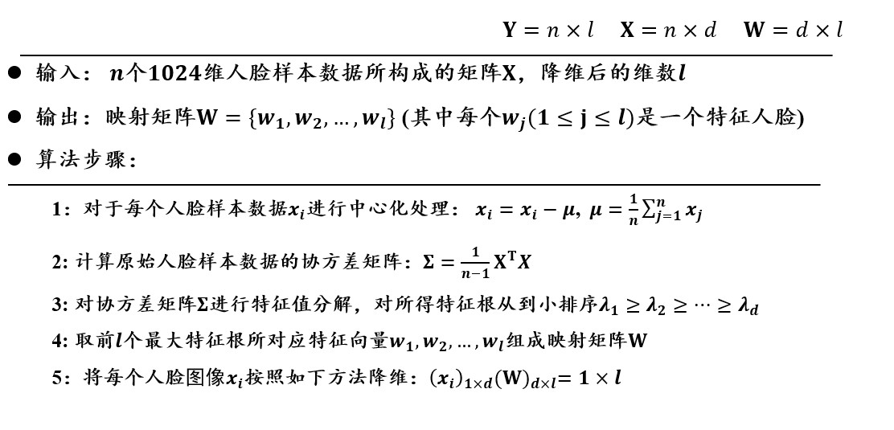

Medium
3.2 无监督学习
无监督学习的基本概念
寻找数据中存在的结构和模式。
重要因素：
- 数据特征
- 相似度函数： 基于所提取的特征来计算数据之间的相似性
K均值聚类（K-means）
K均值聚类的目的在于将数据依据其特征聚类到不同的集合，最小化类内距离，最大化类间距离。
K均值聚类要求特征变量连续，数据没有异常值。其找到的是一个局部最优，但不能保证找到全局最优。其同时也是一个容易受到初始值影响的迭代算法。
输入：$n$个数据（只有特征，没有标签），$x_i=(x_{i1},x_{i2},···,x_{im})$
输出：$K$个集合
第一步：随机初始化$K$个聚类质心$C={c_1,c_2,···,c_K}$
每个聚类质心$c_j$所对应的集合为$G_j$。
第二步：将每个待聚类的数据放入唯一一个聚类集合中
计算数据$x_i$和质心$c_j$之间的距离
$$d(x_i,c_j)=\sqrt{\sum\limits_{k=1}^m(x_{ik}-c_{jk})^2}$$
计算完与所有质心的距离之后，将$x_i$放入与之距离最近的质心所对应的集合。
第三步：根据聚类结果，更新质心
设聚类集合$G_j$的元素数量为$|G_j|$。
其质心更新后为
$$c_j=\frac{1}{|G_j|}\sum\limits_{x_i\in G_j}x_i$$
第四步：算法循环迭代，直到满足条件
- 到达迭代次数上限
- 前后两次迭代中，聚类质心基本不变
缺点：
- 需要事先确定聚类数目$K$
- 初始化聚类质心对结果影响较大
- 迭代的时间开销较大
- 欧氏距离假设数据每个维度（特征）的重要性是一样的
- 对数据的尺度敏感，例如长度特征的以米还是厘米为单位会对最后的结果有影响
- 对于位于聚类边缘的点的判定过于绝对
主成分分析（PCA）
PCA是一种基于非监督学习的降维方法，通过分析找到数据特征的主要成分，使用这些主要成分来代替原始数据，降维后的结果保持原始数据固有结构，或者说最大限度保持原始高维数据的总体方差结构，把每个样本当作一个类，最大化类间间隔（方差）。
Example

如上图所示，原本的数据有两个特征（$x$和$y$），但我们显然能发现这两个特征是有关联的，因此我们通过主成分分析进行降维，得到主要成分（$z$），用$z$替代$x$和$y$，依然能够保持数据之间的差异性（离散程度），但由于维度的降低，分析起来更加方便。
对向量形式的数据要进行的根本操作： * 找新的坐标原点 求所有数据的中心坐标 * 找新的坐标系（方差最大的地方） 依靠协方差矩阵来求转过的角度
算法动机：
- 将$d$维特征数据映射到$l$维空间，去除原始数据之间的冗余性
- 将原始数据向这些数据方差最大的方向进行投影。一旦发现了方差最大的投影方向，则继续寻找保持方差第二的方向且进行投影（保证方向的正交性）
- 每个数据所得到最好的$l$维特征就是使得每一维上样本方差都尽可能大
算法描述：
在主成分分析中，最优化的方差等于原始样本数据$X$的协方差矩阵$\Sigma$的特征值之和。为了使方差最大，可以求出协方差矩阵$\Sigma$的特征向量和特征值，然后取前$l$个最大特征值所对应的特征向量组成映射矩阵$W$即可。
降维后维数$l$的确定：
当我们不知道降维到多少维合适时，我们可以定义一个比重阈值$\alpha\in(0,1]$，只要$l$满足：
$$\frac{\sum\limits_{i=1}^l\lambda_i}{\sum\limits_{i=1}^d\lambda_i}\geqslant\alpha$$
则降维后的数据包含的信息已经达到了一定的占比，我们可以认为此时的$l$是合适的。
线性判别分析和主成分分析的差异：
特征人脸方法
特征人脸方法是一种应用主成分分析来实现人脸图像降维的方法，其本质是用一种称为特征人脸的特征向量按照线性组合形式来表达每一张原始人脸图像，进而实现人脸识别。
假设一张图像的分辨率为$32\times 32=1024$，每个像素包含一个灰度数值，则可以获得一个1024维的列向量。
但由于人脸具有一定的拓扑结构，像素点之间有较强的空间关系，因此可以使用一个低维向量来表达原始图像大部分的信息，这就是要使用主成分分析的原因。
算法描述：

具象解释：
每个人脸特征向量$w_i$与原始人脸数据$x_i$的维数是一样的，均为1024。可将每个特征向量还原为$32\times 32$的特征人脸，一共$l$个。
将每幅人脸分别与每个特征人脸做矩阵乘法，得到一个相关系数，一共得到$l$个相关系数。
每幅人脸是所有特征人脸的线性组合（系数即为上述）。
在后续人脸识别分类中，就使用这$l$个系数来表示原始人脸图像。计算两张人脸是否相似时，不是去计算两个$32\times 32$矩阵是否相似，而是去计算两个人脸所对应的$l$个系数是否相似。
缺点：
主成分分析生成的特征人脸只能提取原始图像中存在的全局信息，而无法提取局部信息。